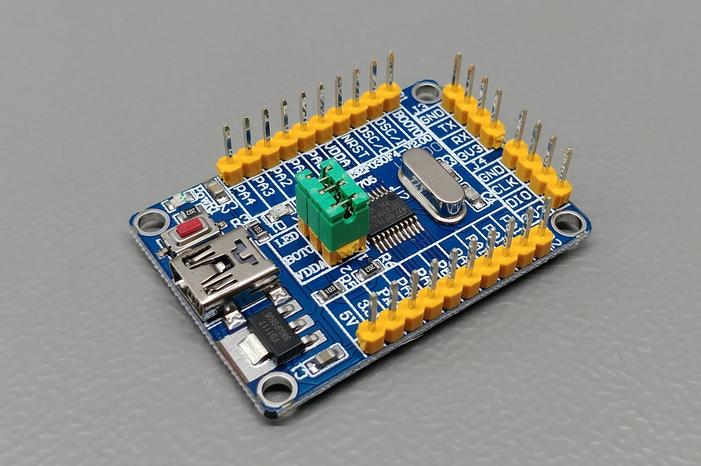
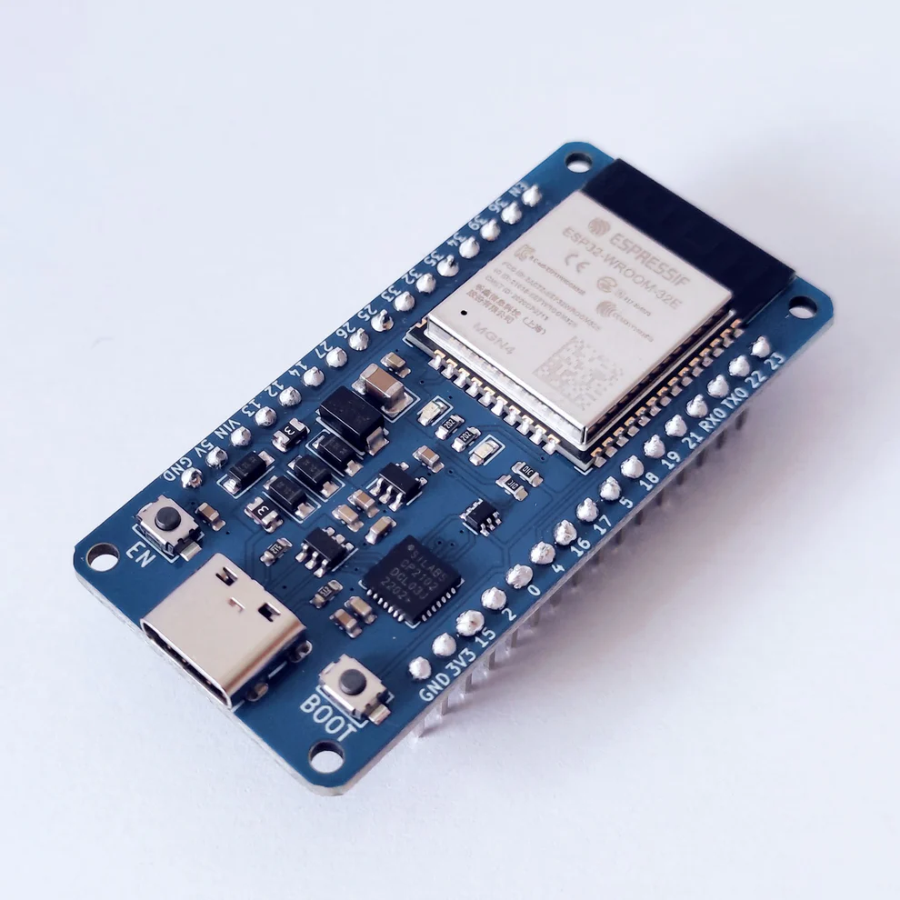
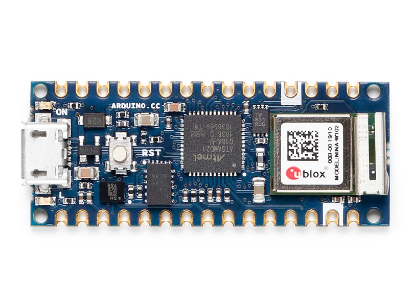
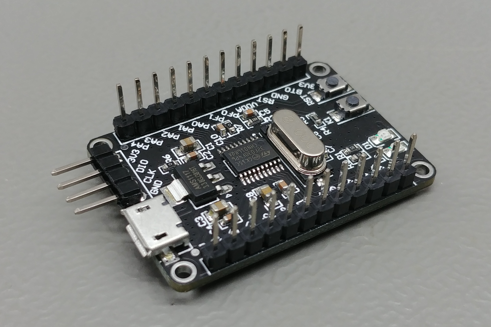
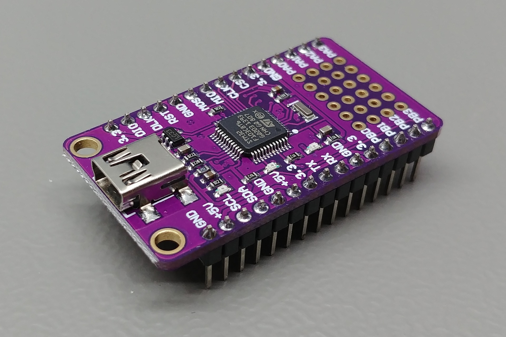
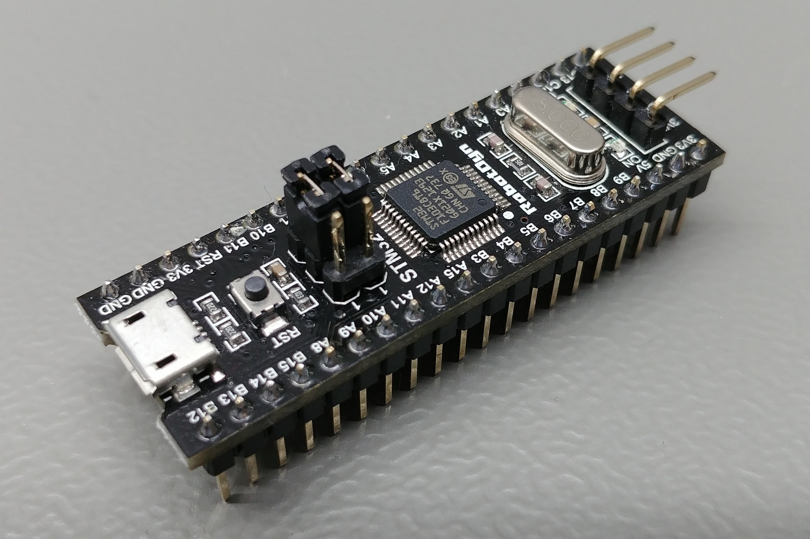
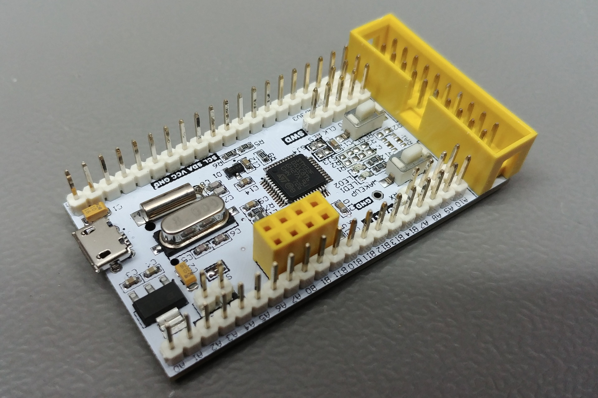

STM32F030F4 mikrokontroler, dio STM32 obitelji, temeljen na ARM Cortex-M0 arhitekturi.

ESP32 WROOM DevKit Rev 2 razvojna ploča opremljena ESP32 čipomArduino Ethernet Shield 2 je dodatak za Arduino ploče koji omogućuje jednostavno povezivanje na internet putem Ethernet mreže. Arduino UNO R4 WiFi je najnovija verzija popularne Arduino UNO ploče, opremljena Wi-Fi povezivošću za razvoj IoT projekata.

Arduino Nano 33 IoT je kompaktna razvojna ploča s integriranom Wi-Fi i Bluetooth povezivošću, idealna za IoT aplikacije.Arduino Zero je napredna razvojna ploča temeljena na 32-bitnom ARM Cortex-M0 mikrokontroleru, pružajući visoke performanse i nisku potrošnju energije.

STM32F030 je kompaktni 32-bitni mikrokontroler iz STM32 obitelji, temeljen na ARM Cortex-M0 arhitekturi.

STM32F103C8T6 "Purple Pill" je razvojna ploča temeljena na popularnom STM32F103C8 mikrokontroleru, koji koristi ARM Cortex-M3 jezgru.

STM32F103C8T6 "Black Pill" je razvojna ploča s mikrokontrolerom STM32F103C8, temeljenom na ARM Cortex-M3 jezgru.

STM32F103C8T6 razvojna ploča temelji se na STM32 mikrokontroleru s ARM Cortex-M3 jezgru, pružajući visoke performanse i široke mogućnosti povezivanja.